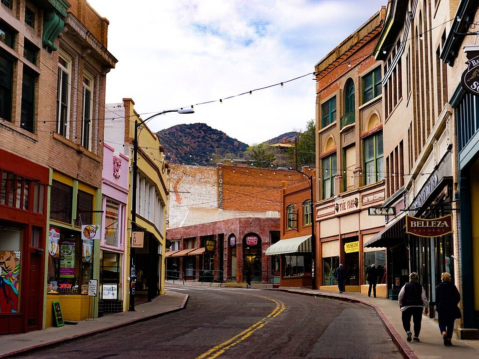

Old Bisbee · Historic hotel
Copper Queen Hotel
A 1902 hotel built by the mining company, said to be haunted.
Official details for Copper Queen HotelA mining town of stairs, galleries and Old West history.
Bisbee was once one of the richest copper towns in the world; today its Victorian buildings climb a steep canyon a mile high, full of galleries, cafés and staircases. Land at Bisbee Municipal, stay at the 1902 Copper Queen Hotel or in a 1950s trailer at the Shady Dell, ride a mine cart into the Copper Queen Mine with a retired miner, and drive half an hour to Tombstone’s boardwalks and the O.K. Corral or to the living caves at Kartchner Caverns.

Time illustration: direct distance at 150 KTAS plus 15 minutes for departure and arrival, matching the discovery page. Use ForeFlight for your actual flight plan.
Check the weekend weather at both ends → Flight category, your minimums and the crosswind on the best runway.
More in Aviation & getting around below. Crew cars change often: call the FBO before you go. How to have a rental car waiting at the FBO · Know something we missed? Tell us.
P04, Bisbee Municipal, is a non-towered city airport at 4,790 feet with a 5,929-foot main runway, about 15 minutes from Old Bisbee.
Bisbee Municipal Airport, Bisbee, AZ
Limited services; 100LL only. Arrange a rental car or taxi ahead. Sierra Vista (KFHU) is a larger airport 30 minutes west; it shares the field with Fort Huachuca. No live fuel price is shown.
High desert flying: high density altitude in summer, strong gusty spring winds and mountain wave, afternoon monsoon storms from July to September, winter snow, and long distances between airports. About 1570 nm from Myrtle Beach: two long days each way with several fuel stops. Plan a week, or overnight on the way out and back.
Rates and availability need travel dates.
A 1902 hotel built by the mining company, said to be haunted.
Official details for Copper Queen HotelRestored rooms above Main Street.
Official details for Letson Loft HotelRestored 1940s and 1950s travel trailers and a diner.
Official details for The Shady DellPrices and availability for your dates, through our partner Stay22. This is an affiliate link: we may earn a commission at no cost to you. The picks above are never paid.
Reserve weekend dinners.
A long-running Main Street favorite.
Official details for Café RokaBig breakfasts in Lowell.
Official details for Bisbee Breakfast ClubRestaurants in Bisbee.
Discover Bisbee for More restaurantsReserve Kartchner Caverns tours ahead.
This prototype links to the local visitor site. It does not yet match events to your travel dates.
A stair-climb race up the town’s staircases.
Bisbee 1000 for Bisbee 1000Mild days at a mile high.
Discover Bisbee for Best weatherGunfight shows daily.
Tombstone Chamber for Tombstone reenactmentsCheck the local calendar when choosing a weekend, and confirm dates and tickets with the organizer.
A sample Bisbee weekend. This is a two-day flight each way; plan a week. No bookings or availability confirmed.
Land at P04 mid-morning.
Lunch on Main Street.
The Copper Queen Mine Tour, then back to the airport.
Land at P04, subject to weather, density altitude and your actual flight plan.
Walk Main Street and the galleries.
Dinner at Café Roka.
The Copper Queen Mine Tour.
Tombstone.
Drinks at the Copper Queen.
Breakfast at the Bisbee Breakfast Club.
Compute takeoff performance for the temperature and allow time at the FBO.
Desert afternoons are hot, bumpy and gusty; leave in the morning.
Tombstone.
Galleries and staircases.
Dinner at Café Roka.
These details make the difference between an appealing list and a usable getaway.
Lodging and a car first.
About 1,570 nm from Myrtle Beach: two long days each way.
Old Bisbee is about 5,500 feet and steep.
October to May.
Picks and links reviewed by WingAway Weekends. Hours, prices, menus and availability change often, so confirm directly with each place before booking. Spotted something out of date, or have a favorite we missed? Email us at hello@wingawayweekends.com.
WingAway Weekends helps you discover the destination. Use ForeFlight and current official aviation information for route, performance, weather, NOTAMs and preflight decisions. Flight planning and PIC responsibility stay with the pilot.
One fly-in weekend, a Fly to Lunch pick and the newest guides, about once a month.
Free. Unsubscribe anytime.